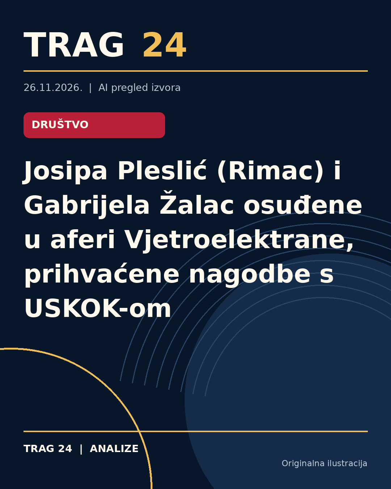

Josipa Pleslić (Rimac) i Gabrijela Žalac osuđene u aferi Vjetroelektrane, prihvaćene nagodbe s USKOK-om

ŠTA SE DOGODILO
Josipa Pleslić, poznatija kao Josipa Rimac, bivša državna tajnica i Gabrijela Žalac, bivša ministarka, priznale su krivicu u slučaju povezanom s aferom Vjetroelektrane i nagodile se s Uskokom. Pleslić je osuđena na godinu i deset meseci bezuslovnog zatvora, uz novčanu kaznu od 60.000 eura i obavezu vraćanja imovinske koristi u vrednosti od 209.000 eura. Žalac je osuđena na godinu dana zatvora, dok je Domagoj Validžić, bivši pomoćnik ministra gospodarstva, dobio deset meseci uslovne kazne zatvora s rokom kušnje od dve godine.
HRONOLOGIJA
Josipa Rimac uhapšena je 29. maja 2020. godine. Tokom istrage koja je naknadno proširivana, USKOK je podigao optužnicu krajem 2022. godine protiv devetero okrivljenika u vezi sa projektom vjetroelektrane Krš-Pađene kod Knina. U septembru 2023. Rimac je priznala krivicu u drugom predmetu, a u novembru iste godine nagodila se i u predmetu vezanom za pogodovanje građevinskoj firmi. Presuda za ovaj predmet donesena je nakon sporazuma o priznanju krivice.
ŠTA NAVODE IZVORI
Prema navodima, Rimac je koristila svoj politički uticaj kako bi omogućila kompaniji C.E.M.P., poduzetnika Milenka Bašića, neophodne dozvole i povoljnije uslove za izgradnju vjetroelektrane. Pored toga, Žalac je učestvovala u pokušajima da se za projekt osigura povoljnije finansiranje, uključujući kredit od 130 miliona eura od Hrvatske banke za obnovu i razvoj. Validžić je optužen da je svojim tumačenjem propisa pomogao Bašićevoj firmi da zadrži povlašćeni status proizvođača električne energije. U predmetu su ključni dokazi tajno snimljeni razgovori i poruke iz Rimacinog mobilnog telefona o njenoj ulozi u uticaju na državne službenike.
ŠTA JE POTVRĐENO
Sud je prihvatio sporazume s optuženima i izrekao kazne. Josipa Pleslić (Rimac) osuđena je na godinu i deset meseci zatvora bez uslovne kazne, uz plaćanje novčane kazne i povrat nezakonito stečene imovine. Osuđena je i Gabrijela Žalac, dok je Validžić dobio uslovnu kaznu. Obrana je najavila da će eventualno tražiti odgodu izvršenja kazne zbog ličnih okolnosti. Takođe je potvrđeno da je Rimac uplatila oko 70.000 eura od ukupnih dugovanja i redovno se pridržava presuda.
ŠTA NIJE POTVRĐENO
Nije potvrđeno da li je do sada kompletno izvršena obaveza povrata imovinske koristi u propisanom roku. Takođe, nije poznato da li su eventualni drugi osumnjičeni u predmetu do sada procesuirani jer će za njih odluka biti doneta odvojeno. Nema potvrde o reakcijama drugih političkih faktora na presude.
ŠTA OSTАJE OTVORENO: Ostaje nepoznato da li će optuženi podneti žalbe i kakav će biti ishod potencijalnih pravnih postupaka, uključujući mogućnost 'neprave obnove postupka' za Pleslić, što može uticati na objedinjavanje kazni. Takođe, procesi protiv ostalih osumnjičenih u okviru ove afere još nisu okončani. Uticaj ove presude na političku scenu i dalje je nejasan.
Izvori
- https://www.24sata.hr/news/josipa-rimac-dobila-godinu-i-deset-mjeseci-zatvora-zalac-je-osudena-na-godinu-dana-1171223
- https://www.index.hr/vijesti/clanak/josipa-rimac-dobila-godinu-i-10-mjeseci-zatvora/2861116.aspx
Ova analiza je pripremljena uz pomoć veštačke inteligencije na osnovu javno dostupnih izvora. Navodi izvora nisu nužno nezavisno potvrđeni.